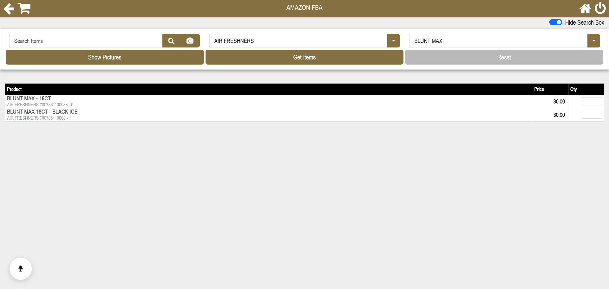

QuickBooks operations
QBSalesStar
A focused desktop and web workspace for sales, inventory, invoicing, and accounting sync.
Cut desktop startup/loading from 2–3 minutes to about 10 seconds.
Explore QBSalesStarOpen to remote roles & consulting
Senior software engineer / Backend & AI evaluation
I'm Ibrahim, a senior software engineer with 6+ years building backend platforms, integrations, and business automation. I also design coding benchmarks and evaluate how AI agents perform real engineering tasks.
Faisalabad, Pakistan Working globally
01 / Selected work
Production platforms and evaluation workflows.
What I built, how it works, and why it matters.

QuickBooks operations
A focused desktop and web workspace for sales, inventory, invoicing, and accounting sync.
Cut desktop startup/loading from 2–3 minutes to about 10 seconds.
Explore QBSalesStarHuman-in-the-loop AI
Human review of tool use, coding benchmarks, and automated grader quality.
Authored 6 coding tasks with 90 behavioral checks at AfterQuery; led a 10-person evaluation pod at Turing.
Explore AI evaluationLegal operations backend
A production backend connecting legal intake, field operations, document extraction, and billing.
Connected client, admin, and driver workflows in one Laravel platform.
Explore WEPROCESS02 / Experience
Software delivery, technical leadership, and AI evaluation.
Contract and part-time work is labeled below.
Full-time · United States · Remote
Build Laravel and C#/.NET platforms for retail operations and QuickBooks integration. Automated finance workflows across 10,000+ invoices and improved desktop startup/loading from 2–3 minutes to about 10 seconds.
Contract · Remote
Assess AI coding agents across software-development tasks, including behavioral correctness, pairwise comparisons, and automated grader quality.
Contract · Remote
Authored six coding-agent tasks with reproducible Docker environments, reference solutions, and 90 automated behavioral checks across debugging, backend, security, and compiler tasks. Reviewed task difficulty and resistance to shortcuts.
Contract · United States · Remote
Led a 10-person AI trainer pod. Created and reviewed evaluation protocols across 500+ scenarios, with a focus on function calling, tool-use reasoning, and consistent human review.
Freelance · Remote
Deliver applications from requirements through production support for direct clients and through Fiverr (since Aug 2020), including legal operations and job-discovery platforms.
Contract · Remote
Reviewed voice and audio agent outputs for response quality and correctness, contributing human feedback for model training and calibration.
Contract · United States · Remote
Compared model outputs for reasoning, instruction following, safety, and tool-use correctness; documented recurring failure patterns and structured reviewer feedback.
Part-time · Pakistan · Hybrid
Tuned SQL and backend services, developed microservices and deployment automation, and built C# reporting tools that reduced report generation from hours to minutes.
Jul 2022 – Apr 2024 · Full-time · Faisalabad · On-site
Modernized backend infrastructure with Docker deployments, AWS, Redis caching, and CI/CD; tuned queries and release workflows to support production delivery.
Aug 2021 – Jun 2022 · Full-time · Faisalabad · On-site
Built Django and JavaScript dashboards and automated recurring backend processes, saving 15+ hours of manual work per week.
Jul 2020 – Oct 2020 · Part-time · Hybrid
Early professional experience in web development.
03 / Capabilities
Tools chosen for the problem.
Systems built for the people using them.
APIs, data models, queues, and reliable connections between business systems.
Coding benchmarks, human review workflows, document processing, and practical RAG applications.
Repeatable deployments, background services, monitoring, and production support.
04 / Background
I work across the full delivery cycle: understanding the workflow, designing the system, implementing the details, and supporting it in production.
Based in Faisalabad and experienced with distributed teams. I'm interested in senior software engineering, AI evaluation, and automation work where clear thinking and dependable delivery matter.
Google Developers profile ↗Education
FAST-NUCES · 2017–2021
Selected certificates
Introduction to Model Context Protocol Anthropic · July 2026AI Fluency for Builders Anthropic / CodePathAlso completed: Claude Platform 101, Claude 101, and Claude Code 101.
All credentials on LinkedIn ↗05 / Let's work together
Open to full-time remote roles and consulting in backend engineering, AI evaluation, and business automation.